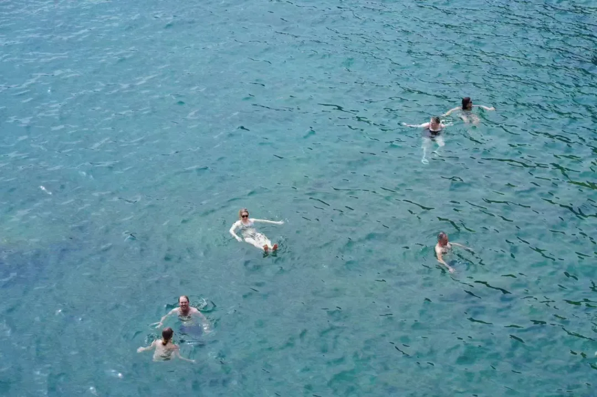
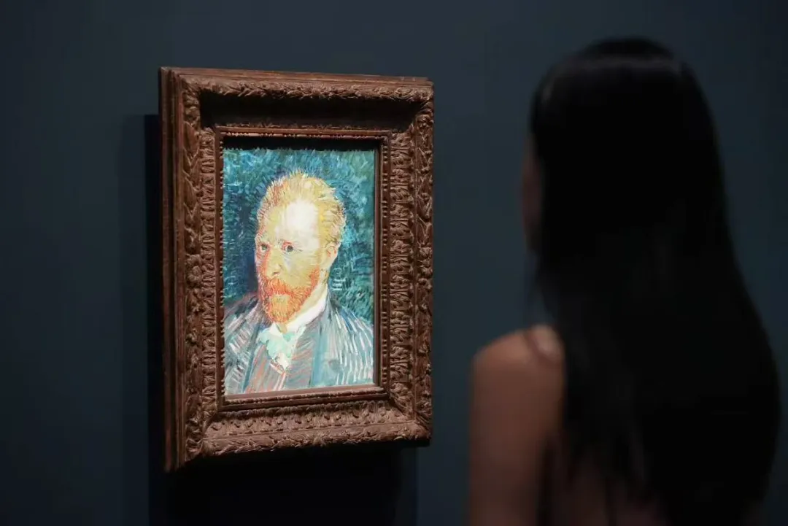

32岁的开头，我在日记问了自己3个问题：
- 如果生命只剩下1年，我会怎样度过？
- 如果生命只剩下1个月，我会怎样度过？
- 如果生命只剩下1天，我会怎样度过？
当我写下这三个问题的答案，真正向往的生活自然就清晰了。于是我告诉自己，不要等到以后再去过想要的生活，而是从此刻就这样去生活。
于是2025年，我和家人自驾游，和队友去了意大利古城，去看了那些书本上的画作，去见了很多老朋友，也时常去逛公园，还做了一些过去只敢想想的事情。
01 行动，才是选择
以前总觉得生活在彼岸才会幸福，为达不到的地方蒙上一层魅。而今年，对理想生活的认知又有了一些变化。
为了应对无意义感，我开始记录《存在价值清单》，按照自己理想生活的各个角度，记录自己做出小小的行动后收获的价值感。为了更好地与孤独相处，我描绘了《与自己相处宝典》，描述自己是一个怎样的人，什么会让自己觉得舒服，什么是并不真正需要的欲望。
在这样的梳理后，我对彼岸，渐渐不再那么执着。我知道，重新构建生活秩序，最终实现的也不过是和现在差不多的生活，而那种政治失权感，并不会因为换了一个地方就减少，反而会因为民族与身份问题变本加厉。
如果拥有在任何地方都有建立生活秩序与安全感的能力，那么这个地方是哪里，就没有那么重要了，它绝对不应该是第一位的因素。
过去，我很有可能是把“选择去另一个地方生活”这件事情当作一种寄托，寄托自己对现实的不满，寄托一种对更好生活的向往。而生活不在彼岸，更应该在当下。因此，我要做的是过好此刻，构建一种美好的生活，从此刻开始，而不是将就着容忍当下。
当我开始这样想，对是否换个地方工作生活，就不再那么纠结了。我大可以通过旅行、出差的方式，去感受另一个国家。我大可以通过学习另一种语言的方式，去了解另一种文化。我所看到的世界，其实都在我的脑海中，它是带不走的印象与想象。
我可以通过很多种方式，把想象变成印象。不必限定于那种出走的单一路径，在熟悉的环境中获得自由，也是一种自我的重塑。
02 见自己见世界
32岁，最大的行动是探索创建一个小事业。这一段跌宕中，我曾高强度工作，有过满满的干劲儿、兴奋和期待，但在相当长的时间里我并不快乐，有过多的焦虑失眠。我没有时间阅读、没有时间思考、没有时间运动，再也没有生活的松软时刻。我感觉自己的情绪和身心状态都不太好。
然后我就在想，**我到底喜欢怎样的生活状态呢？**我快忘记了那种，松软的、可以心无杂念地散步的生活，于是我回头看2024年底的日记里反反复复确认的理想生活。
也许创业是一次执念落地，想证明自己的能力，证明自己拥有创造更自由的生活方式的可能性，证明自己在职场的训练与MBA的学习等各种积累的东西，能有用武之地。
这一段体验，对我来说是一轮对自我和世界的解释的更新。
社会，比原本我接触过的更加复杂。回看过去的32年，实在太乖巧了。我这种工薪家庭成长起来的青年人，往往有4不敢：不敢承受风险，也不敢走出舒适圈，不敢直面冲突，更不敢主动发起冲突。我努力突破了前两种“不敢”，可仍然远远没有打破后两种。我认识到自己巨大的局限性，也认识到社会比原本接触过的更加复杂：在商业竞争里，抹黑、诽谤都是极为简单就可实现的事情，而想要自证清白、扫清负面影响，无论是时间还是金钱上，都要花非常高的成本。这是我从未直接亲身经历过的，以至于带来了巨大的精神压力。
如果你习惯了努力就会有回报：认真备考，就会考上研究生；高效工作，就会赶上DDL。那么创业时你会受到冲击，因为你会发现很多事情，比如招人管人训练人，是一种随时可能会前功尽弃的循环，是一种西西弗斯的劳动。它并不依赖于你有多努力。此外，在人情社会里，有些事情，无须规则，是身份认同和小便利就能解决的。在平台系统中，有些事情，即使再有道理，不符合规则，你也很难协调解决。而至于人性，服务业的许多人，利己的一面更简单直接，人的恶意可以持续许久而浓烈。
我进入了一个巨大的灰色地带，重新学习它的逻辑，接受它的混乱与非理性。我感受到自己的价值观正在被冲击，人格在被重新塑造。但我希望那不是恶的塑造，而是一种适应更多形状的韧性。
03 生活感
32岁，也发现了自己身体上的一些变化，比如我开始会因为工作压力与强度大而偏头痛了，开始因为熬夜而头疼了，开始感到心力不如从前了。我还发现每当忙碌，没有休息日，或者短暂的1个休息日仅仅只是宅在家里的时候，都觉得自己好像不在生活，那是一种很悬浮的感受。于是，每个周末都有课程、没有休息日的三月，让我觉得自己好像都没有在上海建立起一种完整的生活，我好像只是在这里工作、读书。只有短暂的寒暑假，我才产生过生活感。
当时我就在思考，为什么呢？是什么元素会给我带来一种“生活感”呢？结束MBA课程之后，我尽量出去走走逛逛。然后我发现，“生活感”是这些时刻：
是在滨江散步，看形形色色的人和各异的建筑，听浪的声音。是看书，看绿树，是感受流动的空气抚过脖子时的微凉。是车窗外变化着的景观。是建立几个routine的线路，假日无需犹豫就可以去往的书店。
我发现自己心里对生活有一个“心理账户”，以上元素，会不断往这个心理账户存储金币，它们让我的内心不断充盈。而工作是另外一个“心理账户”，当我投入其中，这个账户会积累起知识、技能以及货币，但也会消耗“生活”这个账户的金币。
有一个周日的下午，在家看《机械复制时代的艺术》，本雅明说，大众需要散心，而艺术需要专心。我突然感到，我就是需要散心的大众生活。工作、事业都需要专心，这些我已经足够投入了。以后的日子，我要常常散心，时时生活。
也许不少在大城市居住的人都会有这样的感受——在这里有职业，但没有支点。这个支点，必须是一个固定的住房带来的吗？不一定，它应该也可以是一个生活圈，一群朋友，对一些东西熟悉，产生一种在地的感受，一种与世界的联结。
所以我开始用心营造这些东西，我相信还有一些别的东西，会在过程中自然生长出来。也许过着过着，再回顾的时候，就会发现自己曾在上海深扎下来，有过充实而自足的生活。

结语
32岁，我更加了解自己到底喜欢怎样的生活，也了解了自己适应什么样的生活，在这两种之间的，就是“属于我的，适当且愉快的生活方式”。
32岁，我直面了更加复杂的社会，感受恶意与不堪，经历过沉重，但也体会到——所谓力量，就是人在负荷沉重时依然自由的体验。